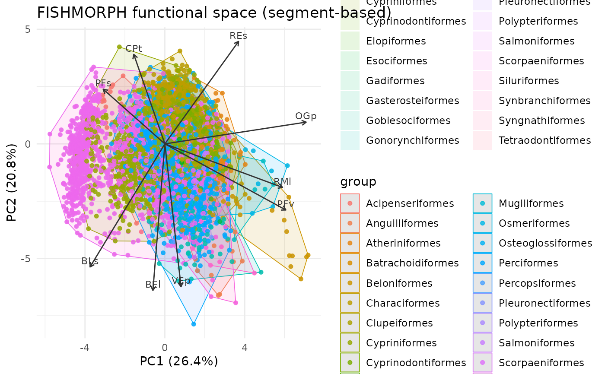
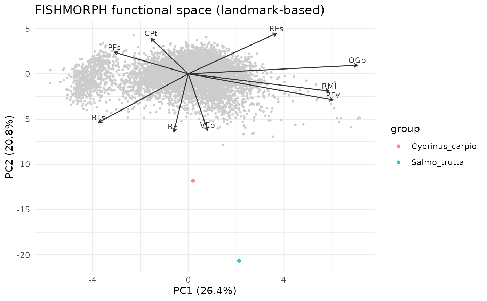

Plot species in the FISHMORPH functional space (landmark- or segment-based)
Source:R/visualize.R
plot_functional_space.RdPorts the intraitR functional-space plot (trait_space() /
project_fishmorph() plotting) into Rfishmorph. Species are placed in the
FISHMORPH morphospace and coloured, with per-group convex hulls and trait
loading arrows. The source argument selects whether the morphological
traits come from digitized landmarks or from measured segments, so the
same species can be compared across measurement methods on one ordination
(as in compare_functional_spaces_fishmorph.R).
Arguments
- x
The data to place: a
fishmorph_landmarksobject whensource = "landmark", or a data frame of segments/ratios whensource = "segment".- source
"segment"(default) or"landmark": how the 9 ratios are obtained fromx.- groups
Optional grouping vector (e.g. species) used for colour and hulls. Defaults to specimen/
Speciesidentifiers found inx.- reference
Optional frozen
fishmorph_trait_spacebackbone to project onto. WhenNULL, the ordination is fitted onx.- axes
Length-2 principal components to display (default
c(1, 2)).- hull
Draw convex hulls (per group, or one global hull when
global = TRUE). DefaultTRUE.- density
Overlay a 2D kernel density (per-group contour lines, or a filled global surface when
global = TRUE). DefaultFALSE. ggplot2 only.- global
Pool all specimens and ignore
groups: a single colour, one overall hull/density (the whole functional space at once). DefaultFALSE.- points
Draw the specimen points (default
TRUE); setFALSEto show only hulls/density.- loadings
Overlay trait loading arrows (default
TRUE).- backbone
When a
referenceis given, draw its cloud as light-grey context points (defaultTRUE).- legend
Show the group colour legend (default
TRUE). SetFALSEto drop it (useful when there are many groups, e.g. species).- scale_cm
Optional scale for landmark-derived measurements (irrelevant to ratios; kept for interface parity).
- engine
"ggplot2"(default) or"base".- ...
Ignored.
Details
The ordination is either supplied via reference (a frozen
fishmorph_trait_space() backbone, e.g. the full FISHMORPH database, onto
which the data are projected) or, when reference = NULL, fitted on the data
themselves. Projecting onto a shared frozen backbone is the correct way to
compare landmark- and segment-based positions, because both then live in one
coordinate system.
Examples
ref <- load_fishmorph_reference()
#> FISHMORPH reference: segment (published) -- 8970 species.
backbone <- fishmorph_trait_space(ref)
# segment-based species positions projected on the frozen backbone
plot_functional_space(ref, source = "segment", groups = ref$Order,
reference = backbone)

# landmark-based positions for digitized specimens
lm <- read_landmarks_csv(
system.file("extdata", "example_landmarks.csv", package = "Rfishmorph"))
plot_functional_space(lm, source = "landmark", reference = backbone)
#> Ignoring unknown labels:
#> • fill : "group"
